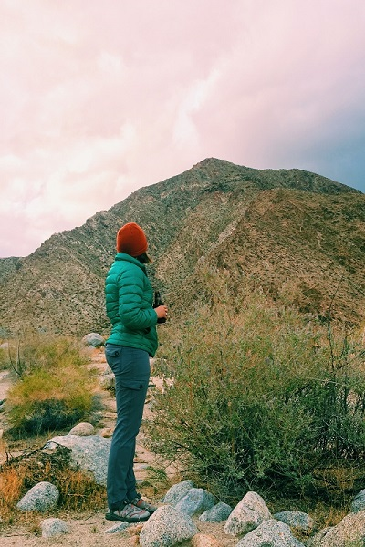

LATEST POSTS
Adventure Vol.4 Desert Oasis
Canyons, Coyotes, and Oasis hiking.
Adventure Vol.3 Big Sur
Roadtripping through the soul of El Sur Grande.

Adventure Vol.2 Santa Cruz Magic
Tales of adventure and to packs circa 1979.

Adventure Vol.1 The Best Damn Camp Cakes
Flapjacks we flip for.